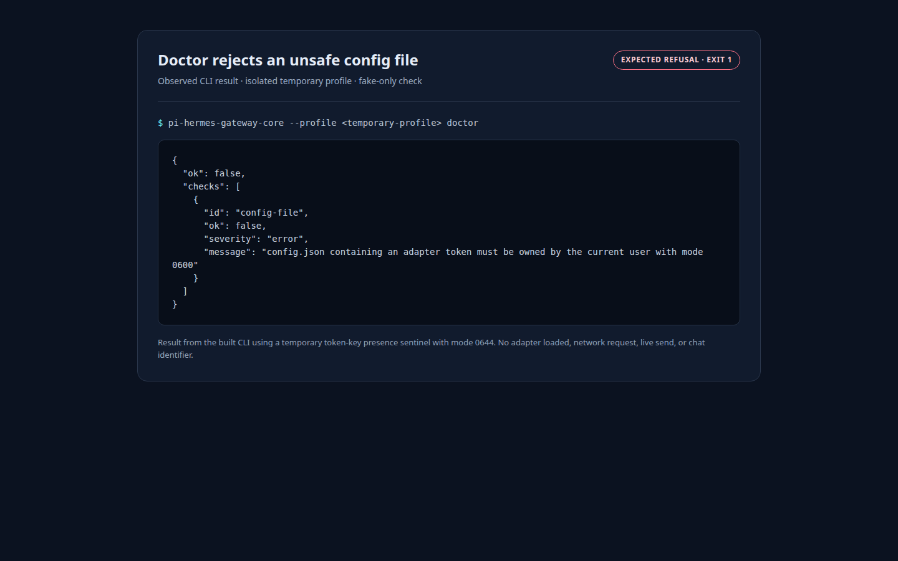

Telegram adapter config guard
Live CLI evidence for the doctor refusal path. The run used only an isolated temporary profile and a token-key presence sentinel.
PASS · UNSAFE CONFIG REFUSED · EXIT 1

Scope and safety
This is fake-only preflight evidence, not proof of Telegram delivery. No real token, chat identifier, live send, or user unit was used or changed. Owner-supplied values remain outside the repository; after that boundary, run pi-hermes-gateway-core --profile <PROFILE> doctor.